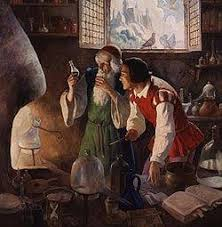
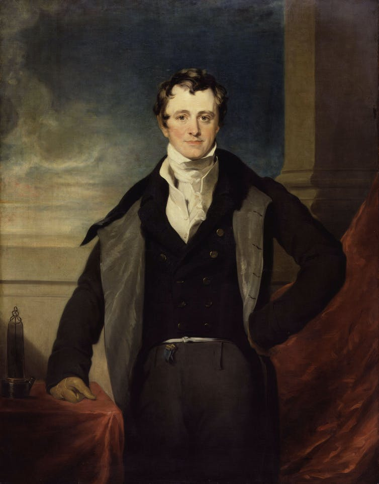
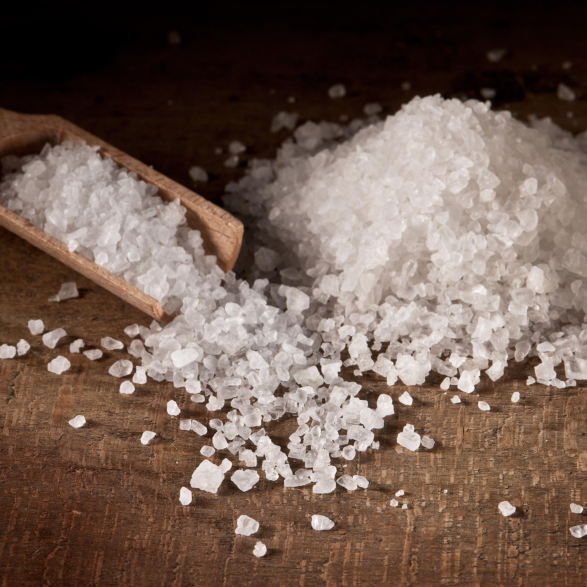

History of Sodium



Humphry Davy
Practice makes pertect!
Who find it?
- Humphry Davy was the first person that find sodium in 1807. And he isolated sodium by the electrolysis of sodium hydroxide.
- The name comes from the English soda and Latin sodanum. It means "headache remedy".
- Sodium is one of the elements which has an alchemical symbol
- The symbol Na comes from the Latin natrium. It stand for "natron" (soda in English).
Where to find sodium?
- Sodium is widely distributed in nature, and with abundant reserves. Usually exists in a compound form, because it is so reactive. It is found in compounds such as sodium chloride or salt.
- It can find in the ocean. About 40% sodium are in the sea.
- Sodium appear in some foods and when we produce and process the food. We also add it during cooking and at the table too, like salt and milk are a few of the foods where can find it naturally.